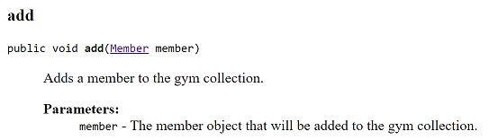

Readme
Based on materials contained in the first 5 weeks of slide decks and labs. It is worth 50% of your overall grade for the module.
Similar(ish) Project
In your previous lab, you worked on a Shop project. Your assignment will be similar(ish) to this project but will incorporate more concepts and require you to develop your own algorithms to solve some of the requirements given to you.
The solution to the Shop V5.0 project can be found here.
The responsibility of the Product class is to manage a single product.
The responsibility of the Store class is to manage an ArrayList of Products.
The Assignment
You are tasked with developing a GymApp.
This GymApp will have three classes:
- Member: The responsibility for this class is to manage a single Member.
- Gym: The responsibility for this class is to manage a collection of members.
- MenuController: The responsibility for this class is to manage the menu, including the user input/ouput.

The instructions for developing the app and the above classes are on the following tabs.
Some key points to remember when coding your assignment
You must use the names given for the Classes and Methods; failure to do so will result in reduced marks.
For all variables, methods and classes used, please adhere to the naming standards discussed in class.
Use internal, helper methods (i.e. private access methods) where appropriate. The interface for your class must match the interface given in the assignment brief. Deviating from the interface will result in reduced marks. Note: the interface here refers to the fields, constructors and methods that are visible outside the class.
Your classes should be Javadoc commented in the same way that the assignment brief has them done.
Member class - overview
Reverse engineer the Member class from the JavaDoc screen shots below and those on the next tab. Note: there is sufficient information in these screen shots to build the class.
Class Description

Constructor

Method Overview

Member class - specific method details
Below you will find more information on specific methods of the Member class.
Getters for the Member class


Setters for the Member class


toString() for the Member class
calculateBMI() for the Member class

convertHeightMetresToInches() for the Member class

convertWeightKGtoPounds() for the Member class

determineBMICategory() for the Member class

isIdealBodyWeight() for the Member class

Gym class - overview
Reverse engineer the Gym class from the JavaDoc screen shots below and those on the next tab. Note: there is sufficient information in these screen shots to build the class.
Class Description

Constructor


Method Overview
Gym class - specific method details
Below you will find more information on specific methods of the Gym class.
Getters for the Gym class
Setters for the Gym class

toString() for the Gym class

add(Member member) for the Gym class

listBySpecificBMICategory(String category) for the Gym class

listMemberDetailsImperialAndMetric() for the Gym class
listMembers() for the Gym class
listMembersWithIdealWeight() for the Gym class

numberOfMembers() for the Gym class
remove(int index) for the Gym class

MenuController class - overview
Reverse engineer the MenuController class from the JavaDoc screen shots below and those on the next tab. Note: there is sufficient information in these screen shots to build the class.
Class Description
Constructor

Method Overview
The implementation of the class is hidden (encapsulated). However, the information and screen shots following tabs will give you sufficient information to complete the class.
MenuController class - menu choices
Once the user has entered the gym details, the main menu is displayed
Below you will find information on each of the menu choices listed in the main menu.
Menu Option 1 - Add a member

Menu Option 2 - List all members

Menu Option 3 - Remove a member (by index)
Menu Option 4 - Number of members in the gym
Menu Option 5 - List gym details
Menu Option 6 - List members with ideal starting weight
Menu Option 7 - List members with a specific BMI category
Menu Option 8 - List all members stats imperically and metrically
Menu Option 9 - Save to XML
Menu Option 10 - Load from XML
Menu Option 11 - or any invalid menu option
Menu Option 0 - Exit
Formatting decimal output
In the assignment, you were asked to truncate output to two decimal places.
Add the following helper method to the Member class:
private double toTwoDecimalPlaces(double num){
return (int) (num *100 ) /100.0;
}- This method:
- takes in a parameter (called num) e.g. 45.76899765
- multiplies it by 100 e.g. 4576.899765
- casts it as an int e.g. 4576
- divides it by 100 e..g 45.76
- and returns this value truncated to two decimal places.
- Given the following sample code:
public double calculateSomething(){
return ( value / anotherValue );
}- We can use the toTwoDecimalPlaces method to truncate the result to two decimal places:
//When returning the result of a calculation, we want to call our
//new toTwoDecimalPlaces method to truncate the result to two decimal places:
public double calculateSomething(){
return toTwoDecimalPlaces( value / anotherValue );
}- Apply this approach to the methods in the Member class whose returned result should be truncated to two decimal places.
JUnit
NOTE: YOU DO NOT HAVE TO DO THIS STEP IF YOU DON'T WANT TO.
For correcting your assignments, we have written two automated test classes:
- MemberTest: This class exhaustively tests the methods in the Member class.
- GymTest: This class exhaustively tests the methods in the Gym class.
We will be running these classes over your submitted assignment and correcting based on the results of the tests. We are releasing them to you so that, prior to submitting your work, you can pre-correct your assignment and make changes / fix your code based on the output of the tests.
Setting up the MemberTest Class
In your GymApp, create a new JUnit test case called MemberTest. If you are asked to add JUnit5 to your build path, add it.
The following code will be generated:
import static org.junit.jupiter.api.Assertions.*;
import org.junit.jupiter.api.Test;
class MemberTest {
@Test
void test() {
fail("Not yet implemented");
}
}Delete all of the generated code in your new class and paste this code into it instead.
Setting up the GymTest Class
In your GymApp, create a new JUnit test case called GymTest.
The following code will be generated:
import static org.junit.jupiter.api.Assertions.*;
import org.junit.jupiter.api.Test;
class GymTest {
@Test
void test() {
fail("Not yet implemented");
}
}Delete all of the generated code in your new class and paste this code into it instead.
Run the JUnit Tests
If you are incorportating JUnit into your assignment, we will show you how to run the unit test classes in Eclipse and interpret the results.
Note: if all of the tests ran successfully, you will end up with output with all green ticks for the 19 tests. If a test fails, you will end up with a red bar and a red X beside the failing test.
Devine Method Pseudocode
isIdealBodyWeight() for the Member class
Pseudocode
- Assume that the calculation only applies to members of five feet and over. If a member is exactly five feet or under, their ideal body weight is set to exactly 50 for males and 45.5 for females.
1. Convert the members height from metres to inches.
2. If the members height is less than or equal to five feet (i.e. 60 inches) then
2.1 if the member is a male, their ideal body weight is 50
2.2 if the member is a female, their ideal body weight is 45.5
else
2.3 if the member is male, calculate the ideal body weight based on 50 + 2.3 for every inch over 5 ft.
2.4 if the member is female, calculate the ideal body weight based on 45.5 + 2.3 for every inch over 5 ft.
3. Check that ideal body weight (calculated above) is within a +-2 tolerance of the member's startingWeight.
3.1. if within or equal to the tolerance, return true
3.2. else return falseSubmitting your assignment
When you are ready to submit your assignment:
Rename your project folder using the naming convention firstname_surname e.g. siobhan_drohan.
Zip this folder ensuring that it is called firstname_surname.zip. No WINRARs please!
The deadline for this assignment is 10 pm Friday 9th March, 2018.
Interviews
As you know, it is compulsory that you are interviewed on your submission in order to demonstrate both Understanding and Authorship.
These interviews will typically take place in labs the week after submission.
The grade for the interview is a multiplier for your assigment grade. Should you fail to show for your interview, you will receive zero, resulting in an overall grade of zero for your submission.
Indicative Marking Scheme
The marking scheme for the assignment is broken into the following:
Member Class - 24%
Gym Class - 36%
Menu Controller - 30%
Javadoc - 5%
Coding, naming, style - 5%
The above totals to 100%
Extras - 10% will be available to include extras like including exceptions throughout, etc. This 10% is only available is all other functionalities are attempted and will bring your mark to a maximum of 100%.
Interviews
The grade for the interview is a multiplier for your assigment grade. Should you fail to show for your interview, you will receive zero, resulting in an overall grade of zero for your submission.
Use of JUnit when developing your code
If your code passes the JUnit tests provided, this means that you will automatically have 60% (interview permitting!). Use of this code will significantly help you to improve your code. It is worth the effort of getting it up and running and will also be a help to you when we cover it more fully later in the semester. Go for it!